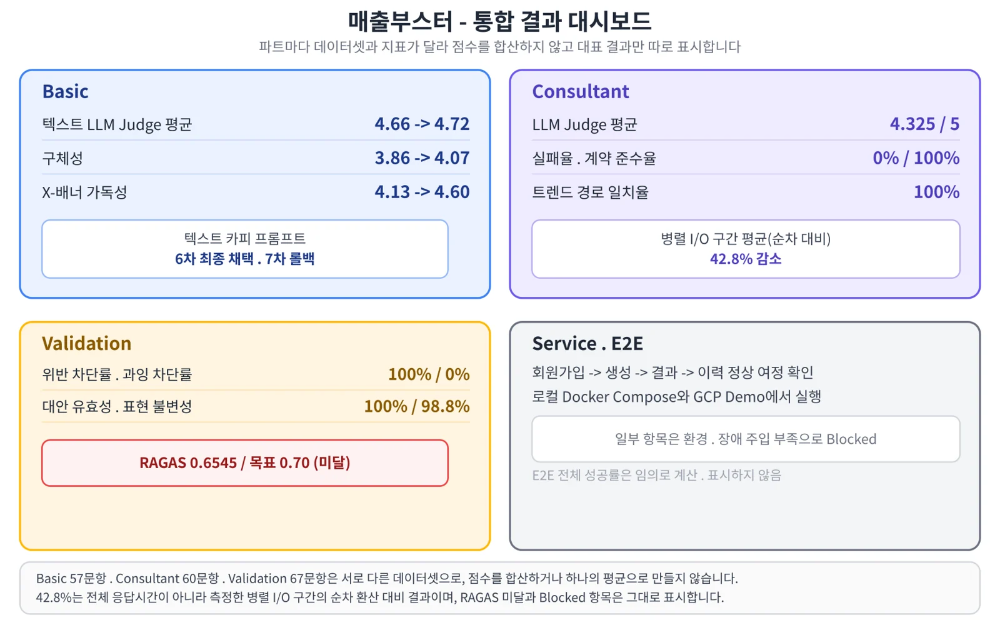
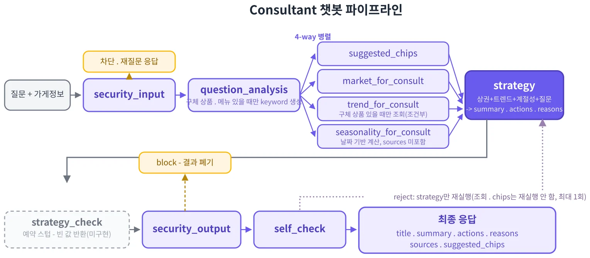
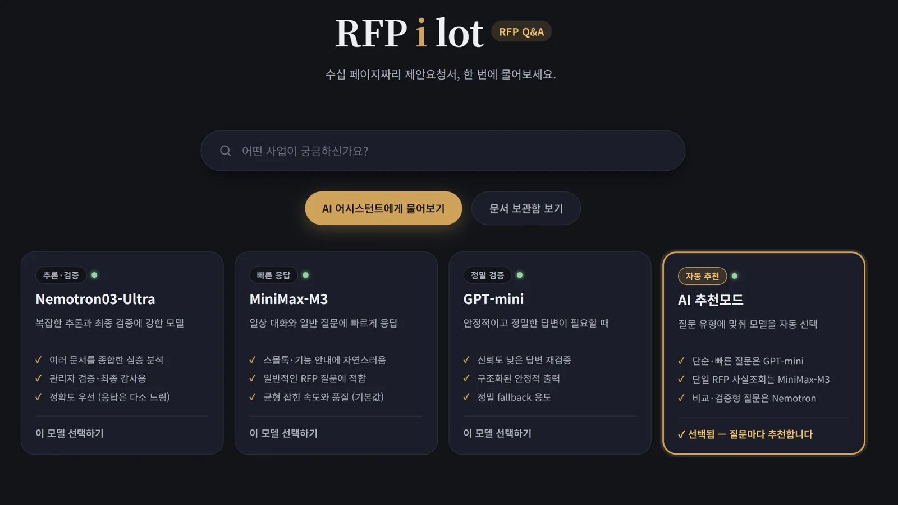
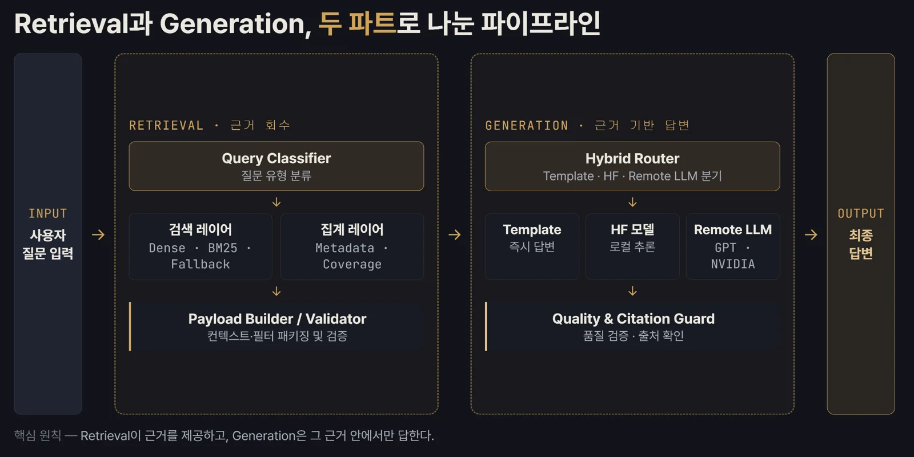

프로젝트 포트폴리오
LLM 챗봇과 비전 모델을 직접 비교하고 평가한 뒤, 서비스에 연결해 끝까지 확인한 네 개의 프로젝트입니다.
각 프로젝트는 목표와 제약, 핵심 결정, 결과, 트러블슈팅, 다음에 바꿀 점 순서로 정리했습니다. 수치는 모두 내부 평가와 측정값이며, 측정 조건을 함께 적었습니다.
매출부스터
외부 API가 흔들려도 상담이 이어지는 LangGraph 챗봇
상권·검색 트렌드를 근거로 소상공인에게 마케팅 전략을 상담해 주는 챗봇
- 기간
- 2026.08.04 ~ 2026.08.31
- 팀
- 4인 부트캠프 팀 프로젝트
- 내 역할
- 컨설턴트 챗봇 1인 개발, LangGraph 설계·구현, 챗봇 응답 평가, 최종 보고서 작성
- 사용 기술
- Python, LangGraph, LLM API, SQLite·SQLAlchemy(조회 캐시), LLM Judge


목표와 제약
- 상담 답변은 외부 상권·검색 트렌드 API 조회에 기대고, 외부 API는 일부가 응답하지 않거나 느릴 수 있었습니다.
- 화면에 상담 결과가 나오려면 LLM이 요약·필수 실행 항목(actions)·근거를 정해진 형식으로 반환해야 했습니다.
핵심 결정
수업에서 배운 LangGraph를 적용해 상권·트렌드·계절성 조회와 추천 질문 생성을 병렬로 실행한 뒤 전략 생성 노드에서 합치도록 구성했습니다. 외부 API 일부가 실패해도 조회에 성공한 자료로 상담을 이어 가게 했습니다. 다른 구현 방식과 직접 비교해 고른 것은 아닙니다.
기존 골든셋 45문항에 상품별 검색 추세를 쓰는 상담 15문항을 더해 60문항 평가셋을 만들고, 외부 API 응답을 저장해 두고 매번 같은 값을 쓰는 방식(fixture)으로 고정해 같은 조건에서 반복 평가했습니다. 필수 필드·배열 길이는 규칙으로 검사하고, 근거 충실도 같은 내용 품질은 LLM Judge로 따로 채점했습니다. Judge 자체가 흔들리는지 보려고 같은 응답을 3번 채점하는 안정성 파일럿(5문항, gpt-4.1-mini, temperature 0)을 구현해 돌렸고, 2문항에서 한 항목이 1점씩 달라지는 것을 확인했습니다. 이후 팀은 “편차 0” 대신 허용 범위를 둔 기준으로 조정했습니다.
서로 기다릴 필요가 없는 조회 작업을 병렬화하고, 외부 API 조회 결과는 Cache-Aside 방식으로 7일간 재사용했습니다. 캐시 DB에 문제가 있으면 실시간 API로 조회합니다.
결과
캐시가 유효한 동일 조건 재조회는 상권·검색 트렌드 각각 15ms 이하였습니다(최초 조회 상권 1.33~1.95초, 트렌드 0.86~1.56초). 최종 평가는 LLM Judge 4.325/5, 필수 응답 형식 60/60입니다. 실행 실패 제거는 형식 문제 해결이며, 같은 비교에서 Judge 평균은 4.39 → 4.35로 오히려 조금 낮아졌습니다.
트러블슈팅
v0 평가에서 상담 결과를 반환하지 못한 5건을 추적하니, 모델이 필수 실행 항목을 빈 배열로 반환하고 있었습니다. 재현 실험 15회 중 8회에서 빈 배열을 확인했고, 다시 요청하면 복구된다는 점을 근거로 PM과 재시도 기준을 합의했습니다. 실행 항목이 0개면 보완 지시를 붙여 재생성하고, 4개 이상이면 앞의 3개를 쓰도록 했습니다.
60문항 중 11문항의 근거(reasons)가 날짜만 보고 수요 증가를 단정하거나, 사용자가 말한 시점과 현재 계절이 충돌했습니다. 단정을 금지하고 사용자 시점을 우선하도록 프롬프트를 고쳐 11문항을 다시 실행했고, 시점 충돌 사례는 해소됐지만 날짜로 관심 증가를 추론하는 표현은 일부 남았습니다.
컨설턴트 챗봇 LangGraph 흐름


한계와 다음에 바꿀 점
- LLM Judge는 같은 응답을 반복 채점할 때의 일관성만 확인했고, 사람 채점과 얼마나 맞는지는 확인하지 못했습니다.
- 할인율·손익 계산은 코드로 처리하고, LLM은 설명에 집중하도록 역할을 나누겠습니다.
- 계절성 정보는 질문에 필요한 경우에만 넣어, 날짜로 수요를 단정하는 답변을 줄이겠습니다.
RFPilot
평가셋부터 믿을 수 있게 만든 RAG 평가
여러 제안요청서의 예산·참가자격·평가기준을 찾아 비교하고 근거와 함께 답하는 RAG 챗봇
- 기간
- 2026.06.17 ~ 2026.07.08
- 팀
- 5인 부트캠프 팀 프로젝트
- 내 역할
- PM, 질문·검색 근거 형식 합의, 평가 기준 조율, 골든셋 검수, RAGAS 평가 코드 작성
- 사용 기술
- Python, RAGAS, GPT-4o-mini(평가자), mock 데이터 기반 평가 코드


목표와 제약
- 이 서비스에서는 정답 여부만큼 “검색한 근거로 뒷받침되는 답”이 중요했습니다.
- 평가용 골든셋을 LLM으로 만들었기 때문에, 평가셋 자체에 오류가 있을 수 있었습니다.
- 검색·생성이 아직 통합되기 전에 평가를 준비해야 했습니다.
핵심 결정
PM으로서 검색·생성 담당자와 query/contexts 전달 형식을 먼저 합의했습니다. 통합을 기다리는 동안 mock 데이터로 평가 코드를 준비했고, 공통점형 질문의 답변 인정 범위와 평가 기준을 팀과 조율했습니다.
LLM으로 생성한 초기 단일문서 데이터 186건(31개 문서 × 6문항)을 PDF 원문과 대조해 답변·근거·서식 오류 22건을 수정했습니다.
GPT-4o-mini를 평가자로 둔 RAGAS로 근거 충실도(Faithfulness: 답변 내용이 검색한 근거로 뒷받침되는 정도, 0~1)를 채점했습니다. 평가가 중간에 끊겨도 이어서 돌릴 수 있게 체크포인트를 두고, 점수가 비거나 API 호출·답변 생성에 실패한 항목만 골라 다시 실행하는 스크립트를 작성했습니다.
결과
근거 충실도는 단일문서 MiniMax-M3 0.6661(평균 39초), 다중문서 Nemotron03-Ultra 0.6357(57.86초)이 가장 높았고, 속도는 GPT-mini(단일 10.13초 · 다중 16.13초)가 가장 빨랐습니다. 평가 결과는 골든셋 후속 검수 순서, 모델별 운영 권장안, Auto 모드 검증의 근거로 쓰였습니다.
트러블슈팅
1차 평가 뒤 골든셋 v1~v3을 원문과 다시 대조하다가, 정답은 맞지만 채점에 쓰는 근거(source_text)가 다른 문서에서 온 문항을 발견했습니다. 문서명이 빠져 어느 사업을 묻는지 알기 어려운 질문도 있었습니다. 신뢰도 문제를 팀에 제기하고 검증 우선순위를 정리했으며, 검색 담당자가 원문에서 근거를 다시 추출하고 팀이 검증한 문항만 남겨 단일문서 52·다중문서 40문항으로 재구성했습니다. 평가 코드에는 단일문서 질문 앞에 사업명을 붙이는 처리를 넣었습니다.
검색·생성 파이프라인


한계와 다음에 바꿀 점
- 평가 전에 질문·정답·출처를 원문과 대조해 검수한 문항만 쓰겠습니다.
- LLM 평가자 점수가 사람 판단과 얼마나 맞는지 확인하지 못했습니다. 일부 답변을 직접 채점해 LLM 판단과 비교하고 기준을 보완하겠습니다.
- 재평가 스크립트는 답변을 다시 생성하므로, 같은 답변에 대한 평가자 일관성 검증과는 구분해 설계하겠습니다.
자료
근거 자료는 공개 저장소 문서·코드와 평가 보고서, 내부 보고서와 협업일지는 요청 시 공유
방울이
정확도보다 배포 가능성으로 고른 검침 모델
수도 계량기 사진을 읽어 사용량·요금·환경 영향을 알려 주는 앱
- 기간
- 2026.06.01 ~ 2026.07.20
- 팀
- 4인 사이드 프로젝트, RFPilot과 병행
- 내 역할
- PM, 검침 모델 비교·선정, ONNX 변환, Docker 기반 EC2 배포, 앱 연동, 실기기 검증
- 사용 기술
- YOLOX-s, ONNX Runtime, FastAPI, Docker, AWS EC2, Android 실기기 테스트


목표와 제약
- 초기 상업화를 염두에 둬, 모델 후보부터 라이선스 조건에 맞아야 했습니다.
- 앱이 서버의 검침 모델을 호출하는 구조라, 모델이 서버에서 돌아가는 형식으로 변환돼야 했습니다.
- 부트캠프 수업 뒤에 진행해, 따로 회의실을 잡고 3~5일 단위 마감으로 각자 남는 시간에 작업했습니다.
핵심 결정
팀원들과 계량기함을 직접 열어 사진 200장을 모았습니다. OCR 단독 방식의 성능 한계로 팀은 표시부를 먼저 찾고 숫자를 검출하는 YOLOX-s 2단계 구조로 바꿨고, 저는 최종 연결과 통합을 맡았습니다.
표시부 검출 내부 평가에서 mAP@0.50:0.95는 RF-DETR-nano 0.743, YOLOX-s 0.729였습니다. RF-DETR-nano는 ONNX 변환을 실제로 시도하다 막혔고, ONNX 내보내기와 표시부 검출 108.44ms(forward+NMS)를 확인한 YOLOX-s를 골랐습니다.
오인식값이 바로 저장되지 않도록, 사용자가 인식값을 확인·수정한 뒤 확정한 값만 기록하게 했습니다.
결과
YOLOX-s를 ONNX로 변환해 FastAPI 서버에 올리고 EC2의 Docker 컨테이너로 배포했습니다. Galaxy에서 앱 흐름을 확인한 뒤 Android 테스트 APK를 GitHub Release로 배포했습니다.
트러블슈팅
서버의 비동기 요청 함수가 추론을 직접 호출해, 추론하는 동안 다른 요청 처리까지 막혔습니다. 백엔드 담당자가 없어 AI의 도움을 받아 추론을 별도 스레드로 옮기고, 이미 처리 중이면 기다리게 하지 않고 HTTP 503을 반환하도록 했습니다. 이후 Galaxy 실기기에서 촬영부터 인식값 수정·저장까지 정상 동작을 확인했습니다. 서버 코드는 AI 도움으로 작성했고, 제가 직접 확인한 것은 앱 요청부터 결과 반환까지의 흐름과 실제 동작입니다.
검침 요청 처리 흐름
한계와 다음에 바꿀 점
- 사용자가 늘 때를 대비해 동시 요청·지연·오류를 측정하고, 단계별 병목을 먼저 찾겠습니다.
- CPU 스레드 설정·양자화 같은 최적화는 숫자 인식 정확도와 함께 비교하겠습니다.
- 팀 밖 사용자에게 촬영·인식값 수정 경험에 대한 피드백을 받겠습니다.
이게머약
모델은 직접 비교해서, 데이터는 끝까지 따라가서
알약 사진으로 약을 인식해 효능·복용법·주의사항을 알려 주는 앱
- 기간
- 2026.04.21 ~ 2026.05.11
- 팀
- 5인으로 시작해 4인으로 완료한 부트캠프 팀 프로젝트
- 내 역할
- PM, RetinaNet 구현, YOLO11s·11m 비교·튜닝, JSON 덮어쓰기 오류 수정, 약품 API 2종 연동
- 사용 기술
- PyTorch, torchvision(RetinaNet), Ultralytics YOLO11, 공공데이터 API(e약은요·식약처)


목표와 제약
- 3주 일정 안에 56종 알약을 검출하는 모델과 앱을 완성해야 했습니다.
- 중간에 데이터 담당 팀원이 빠져, 데이터 작업이 멈추면 전체 일정이 막히는 상황이었습니다.
핵심 결정
YOLO가 알약 데이터에도 적합한지 직접 확인하려고 6종 모델 비교를 제안했고, 이후 YOLO11m까지 7종을 실험했습니다. 저는 torchvision의 COCO 사전학습 RetinaNet을 불러와 헤드를 알약 클래스 수에 맞게 교체해 학습했습니다. 위치를 더 엄격하게 보고 싶어 mAP@0.75:0.95를 기준으로 삼았습니다.
팀과 함께 성능과 학습 시간을 보고 YOLO11s를 고른 뒤, YOLO11s 8개·11m 4개, 총 12개 설정을 비교했습니다. 학습률 비교에서는 입력 640·배치 24·100에포크를 고정했습니다.
아침·오후 2시·6시 하루 세 번 브리핑 시간을 정하고, 모델링을 일찍 끝낸 팀원에게 탐색적 데이터 분석을 맡겼습니다. 데이터 추가 마감과 실험 착수 시점을 정해 일정을 맞췄습니다.
결과
YOLO11m은 200에포크·47분 45초에 0.9539로, 학습 조건이 같지는 않지만 11s를 유지할 근거가 됐습니다. 0.9811은 데이터·클래스 구성이 바뀐 뒤의 내부 검증 최고치로, 56종 결과와 같은 조건의 향상폭이 아닙니다.
트러블슈팅
데이터 담당이 빠진 뒤 데이터 작업을 직접 수행했습니다. 추가 데이터로 학습한 모델의 결과 사진에서 알약이 여러 개인데 bbox가 하나만 그려지고 정답으로 처리되는 것을 봤고, 정답 데이터에도 bbox가 하나뿐이었습니다. 조합 이미지의 약별 JSON이 같은 파일명으로 한 폴더에 복사되며 덮어써지는 원인을 찾아, 상대 경로와 하위 폴더 구조를 보존하도록 수정했습니다.
e약은요 API에서 일부 전문의약품 정보가 반환되지 않아, 식약처 제품허가정보 API를 추가로 연동해 우선 조회하고 부족한 항목은 e약은요로 보완했습니다.
JSON 덮어쓰기 원인과 수정
조합 이미지 1장에 약별 JSON이 같은 파일명으로 있어, 한 폴더로 복사하면 마지막 파일만 남았습니다. 재처리 후 JSON 41,176개를 이미지 10,735장 단위로 병합했습니다.
한계와 다음에 바꿀 점
- 튜닝 중 데이터가 추가돼 변인이 섞였습니다. 데이터 추가 전후를 v1·v2로 나누고, 같은 버전 안에서는 데이터·분할·평가 조건을 고정해 파라미터 효과만 비교하겠습니다.
- 12개 설정 중 일부는 여러 값을 함께 바꿨습니다. 한 번에 한 변수만 바꾸는 비교를 늘리겠습니다.